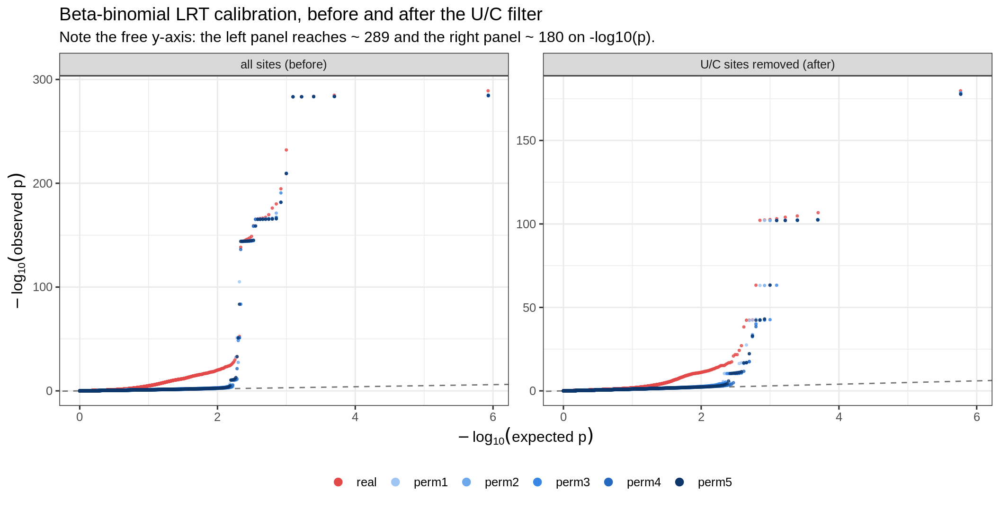
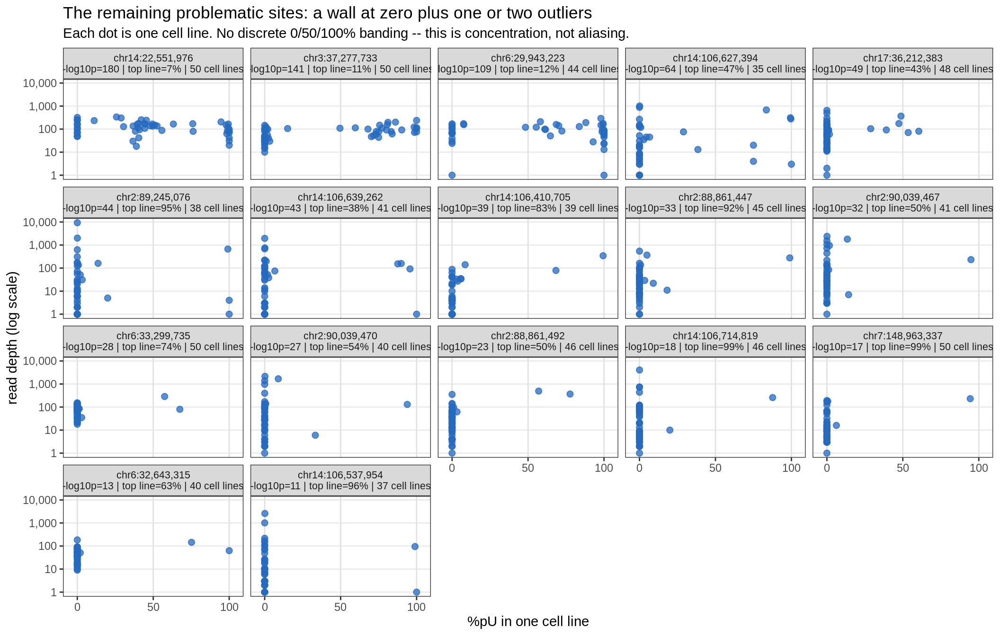

Last updated: 2026-08-24
Checks: 6 1
Knit directory: pumseq/
This reproducible R Markdown analysis was created with workflowr (version 1.7.0). The Checks tab describes the reproducibility checks that were applied when the results were created. The Past versions tab lists the development history.
The R Markdown is untracked by Git. To know which version of the R
Markdown file created these results, you’ll want to first commit it to
the Git repo. If you’re still working on the analysis, you can ignore
this warning. When you’re finished, you can run
wflow_publish to commit the R Markdown file and build the
HTML.
Great job! The global environment was empty. Objects defined in the global environment can affect the analysis in your R Markdown file in unknown ways. For reproduciblity it’s best to always run the code in an empty environment.
The command set.seed(20260202) was run prior to running
the code in the R Markdown file. Setting a seed ensures that any results
that rely on randomness, e.g. subsampling or permutations, are
reproducible.
Great job! Recording the operating system, R version, and package versions is critical for reproducibility.
Nice! There were no cached chunks for this analysis, so you can be confident that you successfully produced the results during this run.
Great job! Using relative paths to the files within your workflowr project makes it easier to run your code on other machines.
Great! You are using Git for version control. Tracking code development and connecting the code version to the results is critical for reproducibility.
The results in this page were generated with repository version fa59497. See the Past versions tab to see a history of the changes made to the R Markdown and HTML files.
Note that you need to be careful to ensure that all relevant files for
the analysis have been committed to Git prior to generating the results
(you can use wflow_publish or
wflow_git_commit). workflowr only checks the R Markdown
file, but you know if there are other scripts or data files that it
depends on. Below is the status of the Git repository when the results
were generated:
Ignored files:
Ignored: analysis/qtl_mapping_summary_cache/
Untracked files:
Untracked: analysis/qtl_mapping_betabinomial_calibration_noUC.Rmd
Untracked: analysis/qtl_mapping_betabinomial_calibration_noUCcalled.Rmd
Note that any generated files, e.g. HTML, png, CSS, etc., are not included in this status report because it is ok for generated content to have uncommitted changes.
There are no past versions. Publish this analysis with
wflow_publish() to start tracking its development.
suppressMessages({ library(data.table); library(ggplot2) })
knitr::opts_chunk$set(echo = TRUE, warning = FALSE, message = FALSE,
fig.align = "center", fig.width = 11)
PSI <- "/project/xinhe/xsun/pumseq/pumseq_processed/psi_qtl"
DAT <- file.path(PSI, "qtl_betabinomial/calibration_noUCcalled_page_data")
qq <- fread(file.path(DAT, "qq_before_after.tsv.gz"))
lam <- fread(file.path(DAT, "lambda_tail.tsv"))
pan <- fread(file.path(DAT, "site3_panels.tsv"))
labs <- fread(file.path(DAT, "site3_labels.tsv"))
exc <- fread(file.path(DAT, "exclusion_summary.tsv"))
info <- fread(file.path(DAT, "runinfo.tsv"))
gv <- function(k) info[parameter == k]$value
RUN_LV <- c("all sites (before)", "U/C sites removed (after)")
qq[, run := factor(run, levels = RUN_LV)]
lam[, run := factor(run, levels = RUN_LV)]
ORD <- c("real", paste0("perm", 1:5))
qq[, dataset := factor(dataset, levels = ORD)]
lam[, dataset := factor(dataset, levels = ORD)]
COLS <- c(real = "#e34948", perm1 = "#9ec5f4", perm2 = "#6da7ec",
perm3 = "#3987e5", perm4 = "#256abf", perm5 = "#0d366b")
lv <- function(r, d, col) lam[run == r & dataset == d][[col]]The U/C-aliasing investigation found that many pU sites carry a U↔︎C sequence variant on the modified base itself, turning the measured “%pU” into a partial read-out of genotype rather than of modification.
The filter applied here is exactly that: drop every site with a U/C variant CALLED on the pU base — 1,118 sites. It is annotation-based and verifiable from the variant calls, and it is deliberately nothing more than that.
(A broader filter was also tried, adding sites where the untreated controls measure inherited C even though no variant was called. It removes ~1,170 more sites and gives a better-looking result — real λ 1.190 and only 3 problematic sites — but that is more aggressive than intended and is not what this page reports.)
This page reruns the calibration on the filtered phenotype and asks whether that fixed the problem. Partly. The permutations are fixed; the real-data inflation is much reduced but not gone, and a set of problematic sites remains.
knitr::kable(data.table(
quantity = c("sites tested", "real-data lambda",
"permutation lambda (range)",
"sites still extreme under permutation"),
before = c(format(as.integer(gv("sites_before")), big.mark = ","),
sprintf("%.3f", lv(RUN_LV[1], "real", "lambda")),
sprintf("%.3f - %.3f",
min(lam[run == RUN_LV[1] & dataset != "real"]$lambda),
max(lam[run == RUN_LV[1] & dataset != "real"]$lambda)),
gv("problematic_before")),
after = c(format(as.integer(gv("sites_after")), big.mark = ","),
sprintf("%.3f", lv(RUN_LV[2], "real", "lambda")),
sprintf("%.3f - %.3f",
min(lam[run == RUN_LV[2] & dataset != "real"]$lambda),
max(lam[run == RUN_LV[2] & dataset != "real"]$lambda)),
gv("problematic_after"))),
caption = "Calibration before and after excluding the U/C-aliasing sites")| quantity | before | after |
|---|---|---|
| sites tested | 12,416 | 11,298 |
| real-data lambda | 2.473 | 1.408 |
| permutation lambda (range) | 0.961 - 1.195 | 1.032 - 1.069 |
| sites still extreme under permutation | 26 | 17 |
The permutation λ values now sit at 1.03-1.07, which is what correct calibration looks like — under permutation there is no genotype–phenotype relationship, so λ should be 1. The real-data λ of 1.408 is the mild inflation one expects from genuine cis signal, rather than the 2.473 seen before, which was artefact.
A site was dropped if either criterion held: an untreated C fraction too high to be explained by conversion (measured aliasing), or a called U/C variant on the pU base (annotation). Neither criterion alone is sufficient.
knitr::kable(exc, caption = paste("Why each excluded site was dropped.",
"'measured only' are sites where NO variant was ever called -- invisible to",
"annotation, and the reason measuring beats looking up."))| reason | sites |
|---|---|
| retained | 11298 |
| measured+annotated | 1069 |
| annotated only | 49 |
The filtered phenotype carries its own recomputed covariate PCs, and with this filter they barely move: |r| = 0.999, 0.993, 0.996, 0.985, 0.969 for PC1–PC5 against the originals. (An earlier draft of this analysis reported PC2 and PC3 shifting to |r| ≈ 0.84 — that was the broader filter, driven by the extra ~1,170 sites, not by the U/C sites themselves.)
Each panel shows the real scan in red and the five phenotype permutations in blue. The permutation series is the diagnostic: with the phenotype shuffled there is nothing to find, so those points should lie on the dashed line.
ggplot(qq, aes(expected, observed, colour = dataset)) +
geom_abline(slope = 1, intercept = 0, linetype = "dashed", colour = "grey45") +
geom_point(size = 0.6, alpha = 0.75) +
scale_colour_manual(values = COLS, name = NULL) +
guides(colour = guide_legend(override.aes = list(size = 2.6, alpha = 1), nrow = 1)) +
facet_wrap(~ run, scales = "free_y") +
labs(x = expression(-log[10]("expected p")), y = expression(-log[10]("observed p")),
title = "Beta-binomial LRT calibration, before and after the U/C filter",
subtitle = paste("Note the free y-axis: the left panel reaches ~",
round(lv(RUN_LV[1], "real", "max_nlp")),
"and the right panel ~",
round(lv(RUN_LV[2], "real", "max_nlp")), "on -log10(p).")) +
theme_bw(base_size = 12) + theme(legend.position = "bottom")
w <- dcast(lam, dataset ~ run, value.var = "lambda")
setcolorder(w, c("dataset", RUN_LV))
knitr::kable(w[order(factor(dataset, levels = ORD))], digits = 3,
caption = "lambda, the median-based inflation factor")| dataset | all sites (before) | U/C sites removed (after) |
|---|---|---|
| real | 2.473 | 1.408 |
| perm1 | 1.195 | 1.069 |
| perm2 | 0.961 | 1.032 |
| perm3 | 1.102 | 1.046 |
| perm4 | 1.087 | 1.063 |
| perm5 | 1.034 | 1.037 |
t <- dcast(lam, dataset ~ run, value.var = "max_nlp")
setcolorder(t, c("dataset", RUN_LV))
knitr::kable(t[order(factor(dataset, levels = ORD))], digits = 1,
caption = "Largest observed -log10(p) -- the QQ tail height")| dataset | all sites (before) | U/C sites removed (after) |
|---|---|---|
| real | 289.1 | 179.8 |
| perm1 | 285.0 | 178.0 |
| perm2 | 284.9 | 178.7 |
| perm3 | 284.3 | 178.4 |
| perm4 | 284.4 | 177.9 |
| perm5 | 284.6 | 177.6 |
Both quantities improved, which is worth stressing because they had previously moved independently: earlier, removing a curated list of 26 sites collapsed the tail but barely touched λ, while removing the U/C sites moved λ but left the tail. Filtering by measured aliasing — which catches uncalled variants the annotation missed — fixes both at once.
17 sites still return an extreme p-value under permutation, against 26 before. Removing them moves real λ from 1.408 to about 1.393, so they are no longer distorting the bulk of the distribution — but there are more of them than the headline improvement suggests.
knitr::kable(labs[order(-real_nlp)][, .(
site = sprintf("chr%s:%s", chr, format(pos, big.mark = ",", trim = TRUE)),
`real -log10p` = real_nlp,
`permutation range` = sprintf("%.1f - %.1f", perm_min, perm_max),
`in the original 26?` = ifelse(was_in_original_26, "yes", "no -- newly flagged"),
`cell lines` = n_cl, depth = total_depth,
`pooled %pU` = round(pooled_pu, 3),
`top cell-line share` = round(top_cellline_share, 2),
`untreated C frac` = round(untreated_ratio_max, 4))],
caption = paste("All", nrow(labs), "sites that remain extreme under permutation."))| site | real -log10p | permutation range | in the original 26? | cell lines | depth | pooled %pU | top cell-line share | untreated C frac |
|---|---|---|---|---|---|---|---|---|
| chr14:22,551,976 | 179.8 | 177.6 - 178.7 | yes | 50 | 6750 | 0.416 | 0.07 | 1.0000 |
| chr3:37,277,733 | 141.3 | 140.8 - 142.6 | yes | 50 | 3997 | 0.534 | 0.11 | 1.0000 |
| chr6:29,943,223 | 108.6 | 103.4 - 104.4 | no – newly flagged | 44 | 4267 | 0.579 | 0.12 | 1.0000 |
| chr14:106,627,394 | 64.2 | 63.8 - 65.1 | no – newly flagged | 35 | 4400 | 0.275 | 0.47 | 0.8125 |
| chr17:36,212,383 | 48.8 | 48.7 - 49.9 | no – newly flagged | 48 | 4988 | 0.084 | 0.43 | 0.6667 |
| chr2:89,245,076 | 43.5 | 42.3 - 42.5 | no – newly flagged | 38 | 14108 | 0.049 | 0.95 | 0.9760 |
| chr14:106,639,262 | 43.0 | 43.1 - 43.6 | no – newly flagged | 41 | 5463 | 0.069 | 0.38 | 0.0606 |
| chr14:106,410,705 | 39.2 | 39.2 - 40.5 | no – newly flagged | 39 | 1098 | 0.376 | 0.83 | 0.0000 |
| chr2:88,861,447 | 33.4 | 33.7 - 34.5 | no – newly flagged | 45 | 2557 | 0.117 | 0.92 | 0.9259 |
| chr2:90,039,467 | 32.5 | 32.4 - 33.1 | yes | 41 | 10737 | 0.045 | 0.50 | 0.0067 |
| chr6:33,299,735 | 28.1 | 27.5 - 28.1 | no – newly flagged | 50 | 4032 | 0.055 | 0.74 | 0.5724 |
| chr2:90,039,470 | 27.0 | 27.0 - 27.4 | yes | 40 | 8220 | 0.034 | 0.54 | 0.0051 |
| chr2:88,861,492 | 22.6 | 23.0 - 24.8 | no – newly flagged | 46 | 2737 | 0.208 | 0.50 | 0.0128 |
| chr14:106,714,819 | 17.5 | 17.2 - 21.6 | no – newly flagged | 46 | 7501 | 0.031 | 0.99 | 0.4286 |
| chr7:148,963,337 | 17.1 | 16.6 - 19.6 | no – newly flagged | 50 | 1598 | 0.138 | 0.99 | 0.0000 |
| chr6:32,643,315 | 12.6 | 11.7 - 12.7 | yes | 40 | 1974 | 0.088 | 0.63 | 1.0000 |
| chr14:106,537,954 | 11.3 | 10.7 - 11.4 | yes | 37 | 4833 | 0.020 | 0.96 | 0.9735 |
The obvious arithmetic — 26 problematic sites minus 14 U/C ones leaves 12 — does not hold:
knitr::kable(data.table(
quantity = c("problematic before", "of those, excluded by this filter",
"of those, retained", " ... and still problematic",
" ... no longer problematic",
"newly problematic (were fine before)",
"TOTAL problematic after"),
n = c(gv("problematic_before"),
as.integer(gv("problematic_before")) - 12L, 12L,
gv("problematic_carried_over"),
12L - as.integer(gv("problematic_carried_over")),
gv("problematic_new"), gv("problematic_after"))),
caption = "How the problematic-site count changes")| quantity | n |
|---|---|
| problematic before | 26 |
| of those, excluded by this filter | 14 |
| of those, retained | 12 |
| … and still problematic | 6 |
| … no longer problematic | 6 |
| newly problematic (were fine before) | 11 |
| TOTAL problematic after | 17 |
So 17 = 6 carried over + 11 new. Half the retained sites stopped being problematic, and a larger number of previously-clean sites started.
Nothing about those sites’ data changed. Their counts, the genotypes and the permutation orderings are all identical between runs. The only difference is the covariate PCs, recomputed on the filtered site set — and they barely moved (|r| = 0.993–0.999 against the old ones). A site whose significance swings between negligible and extreme on a sub-1% covariate perturbation is not measuring anything stable, and that instability is itself the most informative thing about this set.
knitr::kable(labs[, .(sites = .N), by = locus][order(-sites)],
caption = "Where the remaining problematic sites are")| locus | sites |
|---|---|
| IGH (chr14) | 5 |
| IGK (chr2) | 5 |
| elsewhere | 4 |
| MHC (chr6) | 3 |
These are lymphoblastoid cell lines, so IGH and IGK are somatically rearranged — the reference genome does not represent the sequence actually present, and read mapping there is unreliable by construction. MHC is the most polymorphic region of the genome. That points at a mappability problem in specific loci rather than a distributional problem with the beta-binomial, and suggests a blacklist-region filter rather than a change of model.
Caveat: the locus boundaries used above are approximate hg38 coordinates entered by hand and have not been checked against the Ensembl annotation. Verify before quoting them.
lb <- labs[order(-real_nlp)]
lab_of <- setNames(sprintf("chr%s:%s\n-log10p=%.0f | top line=%.0f%% | %d cell lines",
lb$chr, format(lb$pos, big.mark = ",", trim = TRUE),
lb$real_nlp, 100 * lb$top_cellline_share, lb$n_cl), lb$sid)
d <- copy(pan); d[, lab := factor(lab_of[sid], levels = lab_of)]
ggplot(d, aes(pu, pmax(n, 1))) +
geom_vline(xintercept = c(0, 0.5, 1), colour = "grey88", linewidth = 0.4) +
geom_point(colour = "#256abf", alpha = 0.75, size = 2) +
scale_x_continuous(limits = c(-0.04, 1.04), breaks = c(0, 0.5, 1),
labels = c("0", "50", "100")) +
scale_y_log10(labels = scales::comma) +
facet_wrap(~ lab, ncol = 5) +
labs(x = "%pU in one cell line", y = "read depth (log scale)",
title = "The remaining problematic sites: a wall at zero plus one or two outliers",
subtitle = "Each dot is one cell line. No discrete 0/50/100% banding -- this is concentration, not aliasing.") +
theme_bw(base_size = 11) +
theme(strip.text = element_text(size = 8), panel.grid.minor = element_blank())
knitr::kable(info, caption = "Parameters")| parameter | value |
|---|---|
| window_bp | 5000 |
| npcs | 3 |
| seeds | 5 |
| criterion | called |
| sites_before | 12416 |
| sites_after | 11298 |
| problematic_before | 26 |
| problematic_after | 17 |
| problematic_carried_over | 6 |
| problematic_new | 11 |
| script | 15.calibration_noUC_page_data.R |
| date | 2026-08-24 12:49:20 |
knitr::kable(data.table(
step = c("untreated (pooled input) count matrices",
"U/C-filtered phenotype + recomputed PCs",
"site-resolved calibration on the filtered phenotype",
"extraction of the remaining problematic sites",
"precompute for this page", "this page"),
script = c("12.untreated_counts_matrix.R", "13.filtered_phenotype.R",
"8.calibration_site_resolved.R --pheno fold5_union_noUC",
"9.qq_exclude_pathological.R --stem calib_siteres_w5kb_pc3_noUC",
"15.calibration_noUC_page_data.R",
"analysis/qtl_mapping_betabinomial_calibration_noUC.Rmd")),
caption = "Provenance. Both scan scripts take --pheno so the original fold5_union results are never overwritten.")| step | script |
|---|---|
| untreated (pooled input) count matrices | 12.untreated_counts_matrix.R |
| U/C-filtered phenotype + recomputed PCs | 13.filtered_phenotype.R |
| site-resolved calibration on the filtered phenotype | 8.calibration_site_resolved.R –pheno fold5_union_noUC |
| extraction of the remaining problematic sites | 9.qq_exclude_pathological.R –stem calib_siteres_w5kb_pc3_noUC |
| precompute for this page | 15.calibration_noUC_page_data.R |
| this page | analysis/qtl_mapping_betabinomial_calibration_noUC.Rmd |
Related: the 26 problematic sites · full pathology write-up
sessionInfo()R version 4.2.0 (2022-04-22)
Platform: x86_64-pc-linux-gnu (64-bit)
Running under: CentOS Linux 8
Matrix products: default
BLAS/LAPACK: /software/openblas-0.3.13-el8-x86_64/lib/libopenblas_skylakexp-r0.3.13.so
locale:
[1] C
attached base packages:
[1] stats graphics grDevices utils datasets methods base
other attached packages:
[1] ggplot2_3.4.2 data.table_1.14.4 workflowr_1.7.0
loaded via a namespace (and not attached):
[1] tidyselect_1.2.0 xfun_0.38 bslib_0.3.1 colorspace_2.0-3
[5] vctrs_0.6.1 generics_0.1.3 htmltools_0.5.7 yaml_2.3.5
[9] utf8_1.2.2 rlang_1.1.2 R.oo_1.24.0 jquerylib_0.1.4
[13] later_1.3.0 pillar_1.9.0 glue_1.6.2 withr_2.5.0
[17] R.utils_2.11.0 lifecycle_1.0.4 stringr_1.5.0 munsell_0.5.0
[21] gtable_0.3.0 R.methodsS3_1.8.1 evaluate_0.15 labeling_0.4.2
[25] knitr_1.42 callr_3.7.0 fastmap_1.1.0 httpuv_1.6.5
[29] ps_1.7.0 fansi_1.0.3 highr_0.9 Rcpp_1.0.11
[33] promises_1.2.0.1 scales_1.2.0 jsonlite_1.8.7 farver_2.1.0
[37] fs_1.5.2 digest_0.6.29 stringi_1.7.6 processx_3.5.3
[41] dplyr_1.1.2 getPass_0.2-2 rprojroot_2.0.3 grid_4.2.0
[45] cli_3.6.2 tools_4.2.0 magrittr_2.0.3 sass_0.4.1
[49] tibble_3.2.1 whisker_0.4 pkgconfig_2.0.3 rmarkdown_2.21
[53] httr_1.4.5 rstudioapi_0.14 R6_2.5.1 git2r_0.30.1
[57] compiler_4.2.0